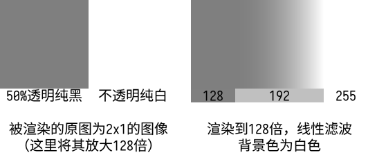

Ch8-4 预乘Alpha
你是否曾看到过这样的图像，3D场景中，薄片状物体的边缘显得很不自然：

-
图片出处，能流畅阅读英文的话看链接里这篇文章即可理解预乘alpha的意义。
采样带透明度的图像时，若没有使用预乘alpha的图像，线型滤波的结果便会呈现出上面这般模样。
先前在Ch1-4 创建交换链中已经简单说明过了什么是预乘透明度，此概念即为预乘alpha。
这里再次简要说明下什么是预乘alpha：
-
直接alpha（straight alpha）：RGB通道代表原始的红蓝绿色值，与A通道（A即代表alpha）相互独立。
-
预乘alpha（premultiplied alpha）：RGB通道的数值为原始的红蓝绿色值与A通道值的乘积（这意味着当你需要修改A通道的数值时，RGB通道的数值应被一并放缩）。
考虑到Ch1-4是入门篇章，将“premultiplied alpha”译作“预乘透明度”比较易懂，网络上通常也是这么翻译的。
这个翻译并不能算准确，有两个原因：A通道值未必是用作不透明度。
混色与线性插值
要理解预乘alpha的作用，得先从混色讲起。
通常会将A通道的值用作不透明度：若一个片段的不透明度为a（a为一个比值），在混色时，应有a的颜色来自该片段本身，(1 - a)的颜色来自其背景。
如果你不采样带透明像素的贴图（或采样这类贴图但不发生放缩），仅仅是片段着色器可能输出半透明的颜色，且输出的色值采用直接alpha，那么正确处理透明度的混色方式如下：
VkPipelineColorBlendAttachmentState{ .blendEnable = VK_TRUE, .srcColorBlendFactor = VK_BLEND_FACTOR_SRC_ALPHA, .dstColorBlendFactor = VK_BLEND_FACTOR_ONE_MINUS_SRC_ALPHA, .colorBlendOp = VK_BLEND_OP_ADD, .srcAlphaBlendFactor = VK_BLEND_FACTOR_ONE, .dstAlphaBlendFactor = VK_BLEND_FACTOR_ONE_MINUS_SRC_ALPHA, .alphaBlendOp = VK_BLEND_OP_ADD, .colorWriteMask = 0b1111 };
-
这些枚举项的解释见VkPipelineColorBlendStateCreateInfo。
将混色结果标记为result，则（加斜字体对应混色因子枚举项）：
result.rgb = src.rgb * src.a + dst.rgb * (1 - src.a)
result.a = src.a * 1 + dst.a * (1 - src.a)
注意到dst.rgb没有乘dst.a，这是因为按这种方法混色的话，混色结果是预乘alpha的，而dst是已经在颜色附件中的色值，如果先前使用的是同样的混色方式，那么dst.rgb当然已经预乘了A通道值。
然而，这种混色方式在放缩带透明度的贴图（尤其是放大），且应用线性滤波时会造成不自然的颜色过渡：
-
上图中，线型滤波的结果图像，如果从128到255是线性地过渡的，中线上的灰度理应是191或192。
但比对底下用做参考的灰度为192的色块，显然192出现在了结果图像的中线右方，而中线上的数值是159。
这是为什么呢？试着计算中线上src的数值：vec4(0, 0, 0, 0.5) * 0.5 + vec4(1, 1, 1, 1) * 0.5，结果是{ 0.5, 0.5, 0.5, 0.75 }。
结果无所谓啦，关键在于将RGBA各通道线性插值后，再将RGB通道乘以A通道，这是在将两个线性变化的量相乘。
线性变化即按一次函数变化，两个一次函数的乘积是二次函数，并非线性函数。因而上图渲染结果的渐变部分，靠近128的一侧的变化较为平缓，而靠近255一侧则较为剧烈。
解决办法就是在采样贴图前，将贴图的RGB通道变为预乘alpha，即将“RGB通道乘以A通道”这一步放到线性插值前。
则混色方式得相应地变为：
VkPipelineColorBlendAttachmentState{ .blendEnable = VK_TRUE, .srcColorBlendFactor = VK_BLEND_FACTOR_ONE, //改动 .dstColorBlendFactor = VK_BLEND_FACTOR_ONE_MINUS_SRC_ALPHA, .colorBlendOp = VK_BLEND_OP_ADD, .srcAlphaBlendFactor = VK_BLEND_FACTOR_ONE, .dstAlphaBlendFactor = VK_BLEND_FACTOR_ONE_MINUS_SRC_ALPHA, .alphaBlendOp = VK_BLEND_OP_ADD, .colorWriteMask = 0b1111 };
比较直接alpha与预乘alpha图像的渲染结果：
-
使用预乘alpha的RGB通道值后，虽然线型滤波的结果在数值上确实是线性变化的，但显示出的渐变效果在视觉上可能仍显得不够柔和，将色调映射到sRGB色彩空间可以获得更好的效果，见//TODO Ch8-5 sRGB色调映射。
对于颜色的线性插值，除去应使用预乘alpha的贴图外，还有以下注意事项：
-
若有色值被线性插值后输入到片段着色器，先前的着色器中应当输出预乘alpha的色值。
-
注意色彩空间：插值之前，应确保色值是线性色彩空间中的色值（TODO Ch8-5会有详细说明）。
创建预乘alpha的贴图
虽然渲染中有使用预乘alpha贴图的必要性，但通常你接触到的图像文件会是直接alpha的。
你从网上下到的PNG通常都会是直接alpha的，PNG标准中规定其图像数值应是直接alpha的形式：
The colour values in a pixel are not premultiplied by the alpha value assigned to the pixel.
虽然图像查看器/图像处理软件在渲染图像时可能会做预乘alpha的处理，但图像处理软件保存的图片通常会是直接alpha的。
这是因为预乘alpha的图像不适合被用于编辑：考虑到图像的存储精度，让RGB通道乘以A通道值，会造成不可逆的精度损失。
例如：每通道8位的图像，直接alpha的R值为1/255，A值只要在[0, 127/255]之间，预乘后的R值便会舍入为0，将0除以A值无法还原到1/255。
综上，既是如此，有必要在运行期从直接alpha贴图创建预乘alpha贴图。
这一节的内容正是对这一处理流程进行封装。
值得注意的一点是，即便一张图中只有完全透明的像素（A通道值为0）及完全不透明的像素（A通道值为1），可能也需要让RGB通道预乘A通道值。
如果这些完全透明像素的RGB通道都是0，那么显然是否预乘没有任何差别。
然而，用stb_image读取png这类压缩格式得到的图像数据，完全透明像素的RGB通道可能不为0，应当将它们预乘为0。
下图中以三种不同的方式渲染了一个...呃，手上拿着一颗胶囊的胶囊小人（画得很烂，请不要在意），它的头是黄色，透明的下半身透出底色，在此基础上加了半透明的高光和阴影：

-
原图被渲染到20倍大小，可以看到，非预乘透明度的情况下，在不透明/半透明与全透明的边界上，呈现出了诡异的灰边——有些地方在高亮度背景上显暗，有些地方低亮度背景上发白，这正是全透明像素的RGB通道非0导致的结果。
概念和注意事项到此为止便讲完了，后续是解说具体的代码。
如果你觉得自己至今为止学得还不错，可以基于所学自己实现相应功能。
TODO 施工中，近日头痛，分两次更完。
示例代码：Ch8-4.hpp和EasyVulkan.hpp